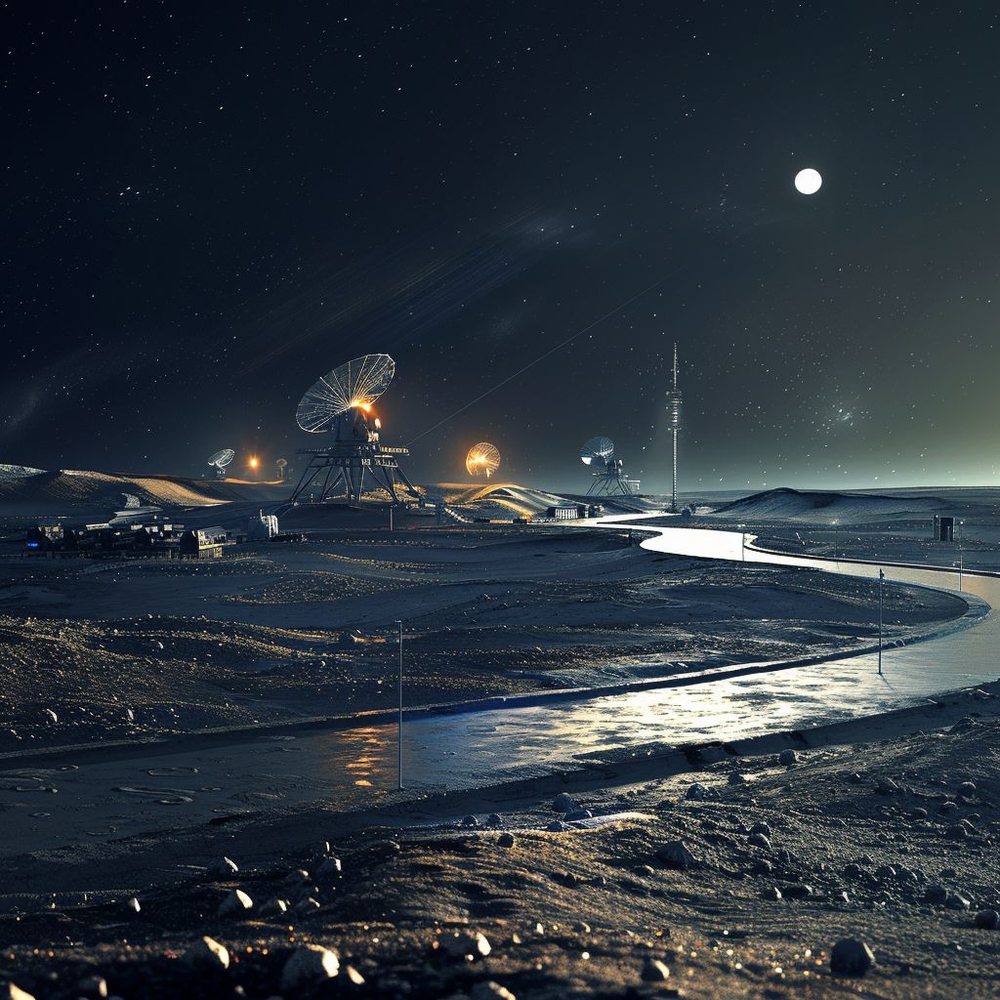

Defence and Security

Defence Base - Modeled After a Submarine
A self-sustained lunar base designed for defense purposes, including robust defense structures and military operations.
Population: ~100-150 individuals
Surface Area Estimate: Approximately 6000 square meters
Total Surface Area Components:
- Living Quarters: Private cabins for officers, shared barracks for soldiers (~1000 sqm)
- Command Center: Centralized operations and control room (~1000 sqm)
- Defensive Structures: Armored bunkers, weaponry storage, surveillance systems (~1000 sqm)
- Training Facilities: Gyms, simulation rooms, shooting ranges (~1000 sqm)
- Medical Facilities: Clinic, emergency room, quarantine rooms (~500 sqm)
- Hydroponic Gardens: For food production and oxygen generation (~500 sqm)
- Storage and Utility Areas: Armories, storage tanks, technical workshops (~500 sqm)
- Logistics and Supply: Warehouses, docking facilities for supply ships (~500 sqm)
Social Structure:
- Structured schedules and routines
- Regular training exercises and drills
- Recreational facilities to maintain morale and physical fitness
Sustainability:
- Advanced recycling systems for waste management
- Utilization of in-situ resources (ISRU)
- Renewable energy sources (solar, nuclear)